Commission a painting
The price depends on the size of the canvas and on how many people and animals are in your story.
Unique storyin loud colours & textures.
Make a request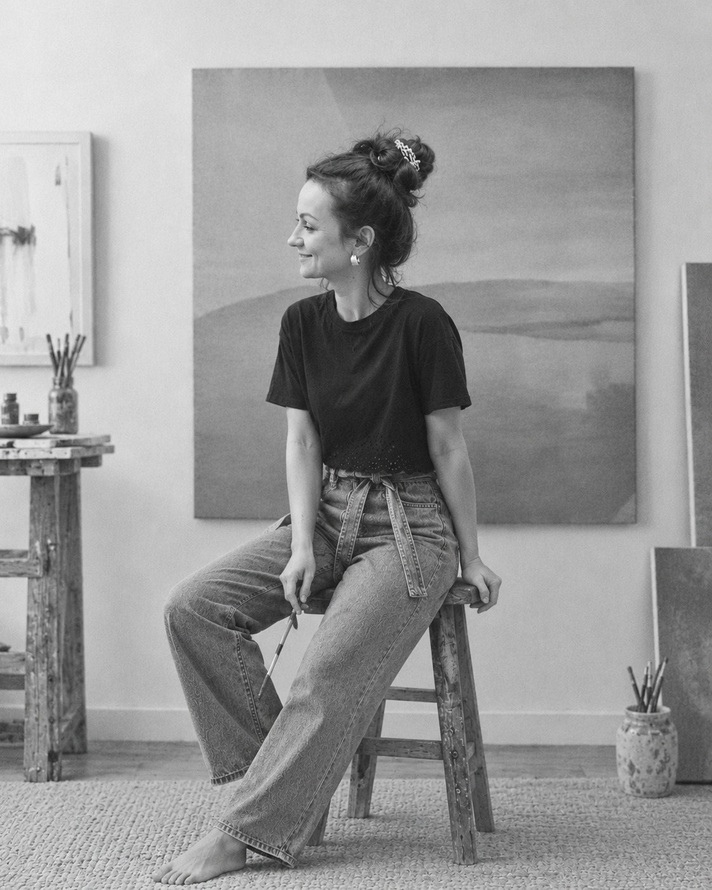
“Art for me 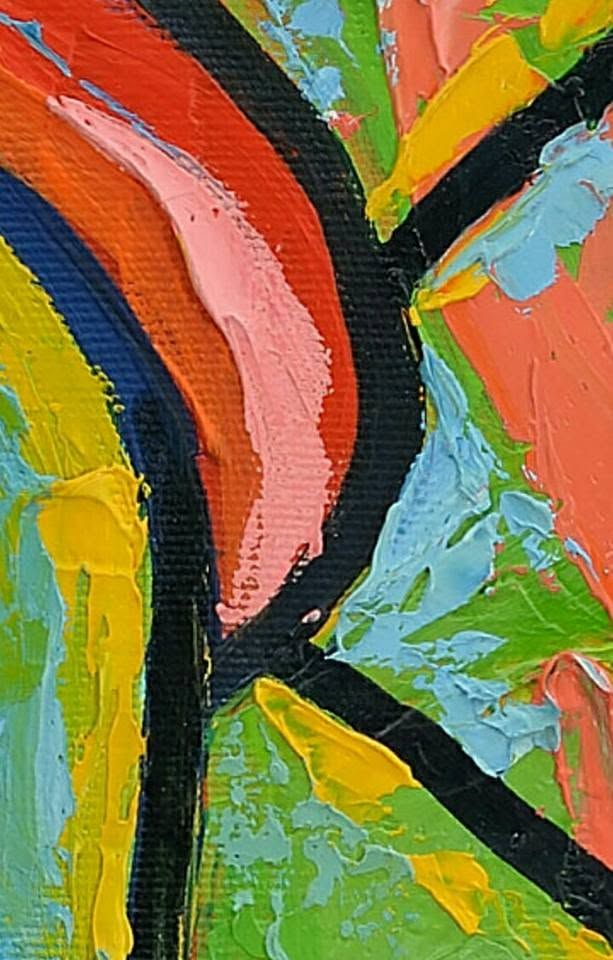 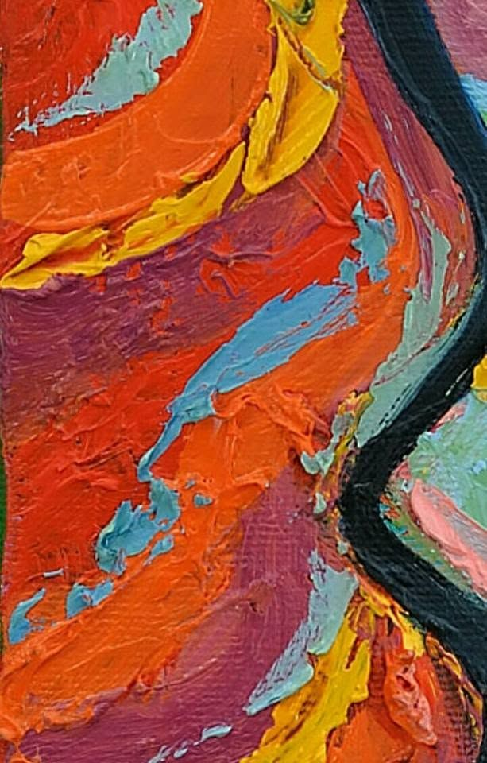 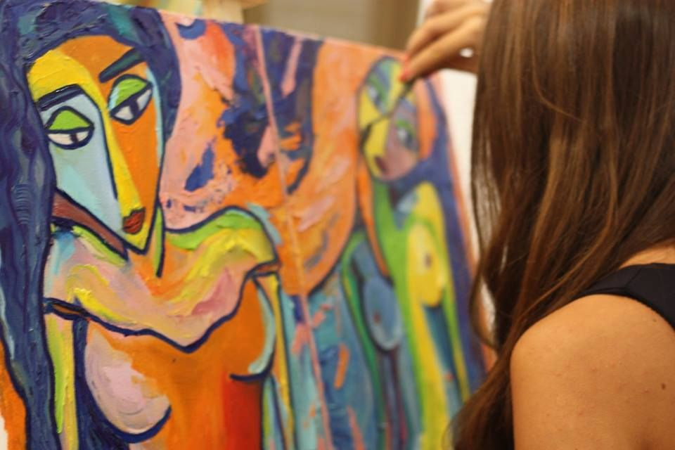
I’m Alona Kalko, a Ukrainian painter living in Germany and painting independently. I work in oil, mostly with a palette knife, and mix techniques whenever a painting asks for it.
I love texture: thick strokes you could almost read with your fingertips, bright colour that never apologises, the weight of paint sitting on the canvas. For me a painting is something you experience with your eyes and with your hands at the same time.
My work moves between two worlds: the many faces of a woman, and the quiet friendship between children and animals.
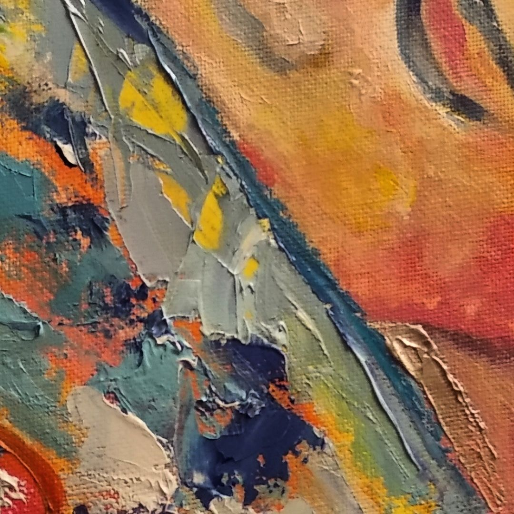
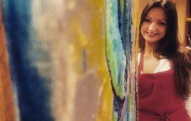
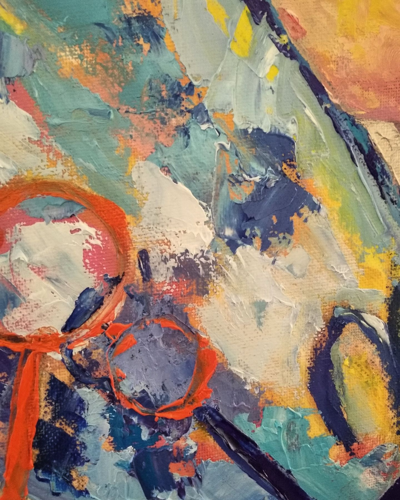
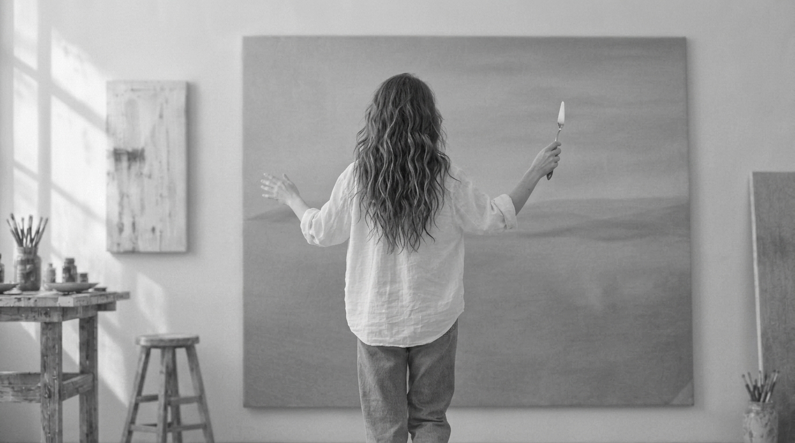
“Every 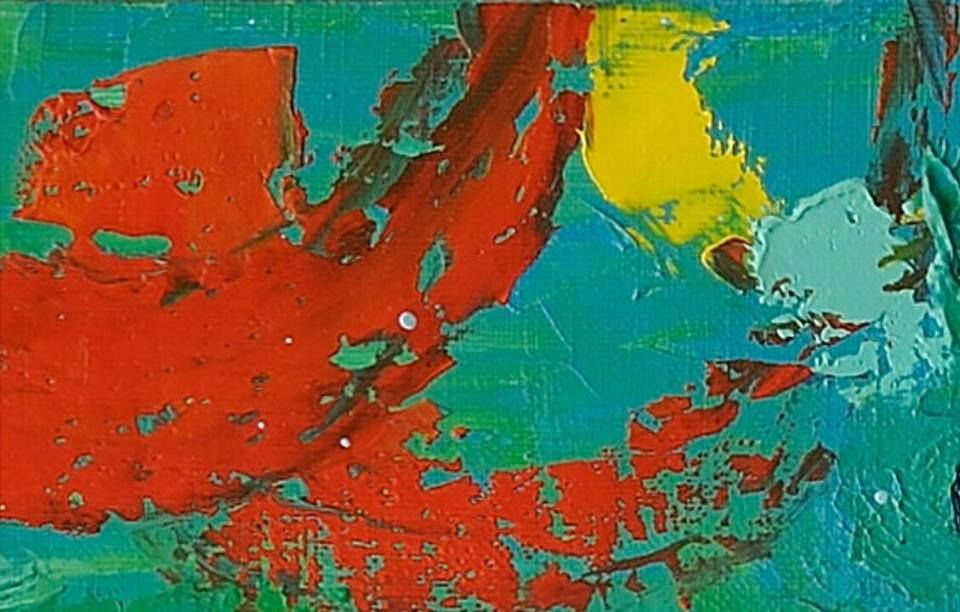 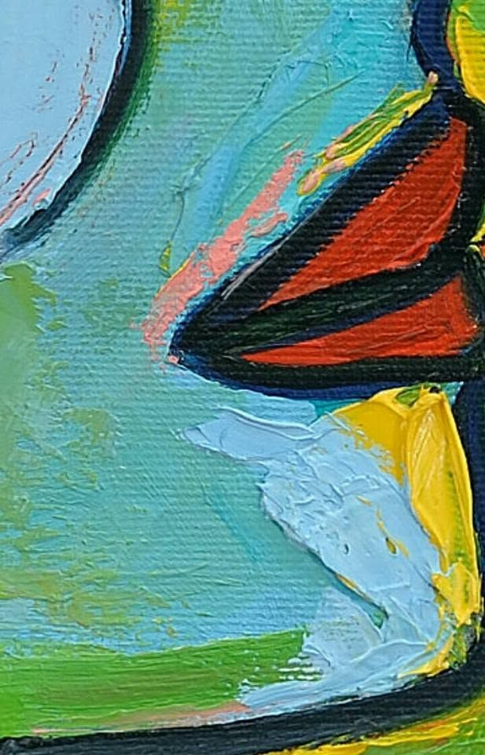

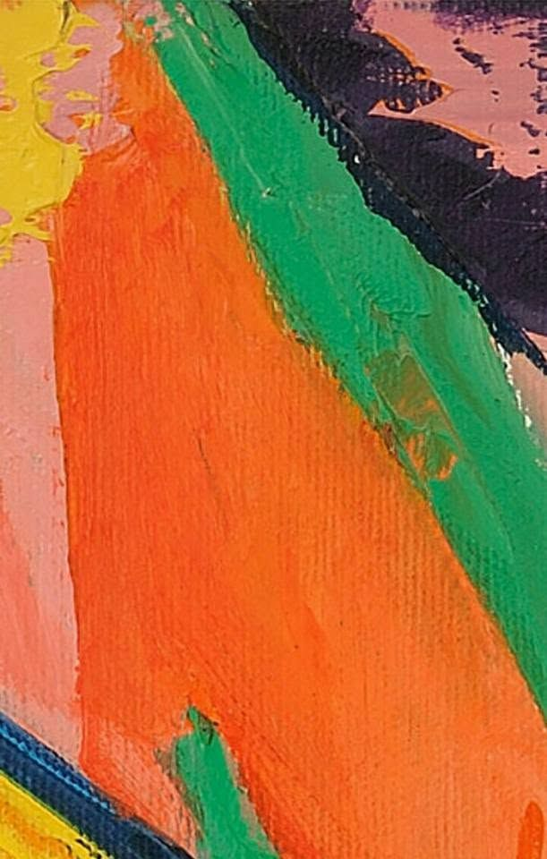
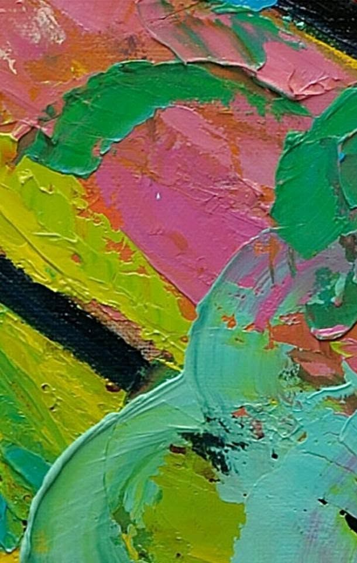
Let me paint something that is only yours: people, couples, families and the animals they love, in the same thick oil and bright colour as my own series.
The price depends on the size of the canvas and on how many people and animals are in your story.